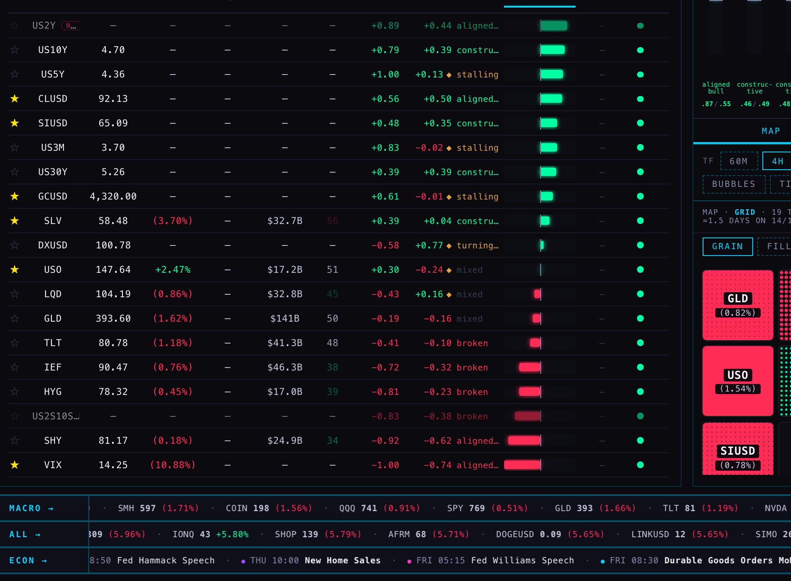
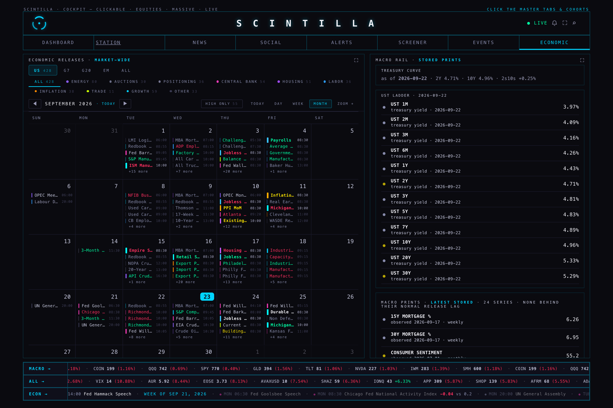

Measured on the live site and the live chart service between 10:38 and 10:57 New York time, Wednesday 23 September 2026. Nothing was changed. Every number below was read, not remembered.
Short answer: the stocks, the funds, bitcoin, the news, the earnings dates and the economic calendar are right and current. The dollar, the oil price, gold and silver are right but show no daily change. VIX and the whole set of government-bond yields on the dashboard are wrong — they are frozen at 14 August and the screen presents them as today.
On the dashboard, under the MACRO group, VIX reads 14.25 and a fall of 10.88% in red. That row was last written on 14 August at 23:33. Nothing has updated it in forty days. The 10.88% is August’s move, painted as if it happened this morning. The same stale number is currently sitting in the ALL ticker tape at the bottom of the screen as the second-biggest mover of the day.
The live VIX at the moment of this audit was 14.68. We already hold that number: the chart service serves it, and the Station uses it. The dashboard simply does not ask.
The Hub gets prices down two different pipes. Shares and funds are fetched fresh from the chart service and overwrite whatever the old database held — that is why every stock on the board is correct. Everything that is not a share (VIX, yields, the dollar, oil, gold, silver) is never overwritten; it is read from an old table called live_quotes, and whatever was last written there is what you see. There is a guard in the page, but it only checks that a row’s price, previous close and percentage agree with each other. It never asks how old the row is. The August VIX row is perfectly self-consistent, so it sails through and is drawn as live.

The ten-year government bond yield exists in three places in the product right now, and no two agree:
| Where you read it | What it says | Where it comes from | How old |
|---|---|---|---|
| Dashboard, MACRO group | 4.70 | live_quotes table | 40 days |
| ECONOMIC tab, treasury ladder | 4.96% | treasury_rates table, dated on screen | 1 day (as designed) |
| Chart service, live | 5.059 | FMP live quote | seconds |
The ECONOMIC tab is the honest one: it prints “as of 2026-09-22” next to the curve, so you know exactly what you are looking at. The dashboard prints a number with no date at all.
What it shows · where it comes from · how fresh it was at 10:57 New York time · whether it is correct.
| What | Comes from | Age | Correct? |
|---|---|---|---|
| Share and fund prices, all cohorts | chart service /quotes (Massive) | seconds | Yes |
| Bitcoin and the other coins | chart service, plus a Coinbase live feed in the browser | seconds | Yes |
| Oil, gold, silver, dollar (CLUSD, GCUSD, SIUSD, DXUSD) | live_quotes, price only | price live | Price yes, daily change missing |
| VIX | live_quotes, written 14 Aug 23:33 | 40 days | No — shows 14.25 / −10.88%, live is 14.68 |
| US10Y, US5Y, US3M, US30Y | live_quotes, written 14 Aug 23:33 | 40 days | No — 4.70 / 4.36 / 3.70 / 5.26 against a current 4.96 / 4.83 / 4.16 / 5.29 |
| US2Y, US2S10S | nothing | — | Honest: says NO FEED / blank |
| RSI column | provider_indicators_current (FMP daily export) | 17.5 h | Yes, but it is yesterday evening’s figure by design |
| TREND, MOM, READ, Geiger bar | chart service /geiger | 2.5 min | Yes |
| MKT CAP, F P/E | company_profile, analyst estimates | daily | Yes |
| MACRO ticker tape (bottom) | eight funds and shares: SPY QQQ IWM SMH GLD TLT NVDA COIN | seconds | Correct, but it is not macro — there is no VIX, no dollar, no oil in it, and NVDA appears twice |
| ALL ticker tape | biggest movers | seconds | Currently ranks the stale VIX as the day’s second-biggest mover |
| Tab | What it shows | Comes from | Freshness measured | Correct? |
|---|---|---|---|---|
| NEWS | Headlines with source and time | news table, 486,851 rows | newest 14:43 UTC — minutes | Yes |
| SOCIAL · YouTube | Videos, watch-later, counts | youtube_feed, 9,928 rows | newest 14:04 UTC — 43 min | Yes |
| SOCIAL · Sentiment | Ticker mentions from transcripts | social_sentiment, 63 rows | newest 00:37 UTC — 14 h | Correct but overnight only; nothing from today’s session |
| ALERTS | “Parked until the hub is settled” | alert_log | — | Honest — it says so on the page |
| SCREENER | “Parked until the hub is settled” | signals, vol_signals | — | Honest — it says so on the page |
| EVENTS | Earnings and dividend dates with estimates | earnings_events, 22,167 rows | forward dated to Mar 2027 | Yes — COST Sep 24, MU Sep 30 are right |
| ECONOMIC · calendar | 428 US releases this month, by category | econ_calendar, 73,268 rows | current month, today marked | Yes |
| ECONOMIC · treasury ladder | 1M to 30Y yields, dated on screen | treasury_rates, 1,535 rows | as of 2026-09-22 | Yes — and it says its own date |
| ECONOMIC · macro prints | 24 stored series with observation dates | econ_history, 15,797 rows | “none behind their normal release lag” | Yes |

Measured by asking each service directly this morning, not from memory. The overnight research folder for this was not on this machine, so everything here was re-established from the live services and the code.
Streaming is a socket held open so the provider pushes every price the moment it happens. It is for the number on the screen, and nothing else. Fetching is us asking on a timer and taking whatever the provider has ready. It is for history — the bars a chart draws and the bars the quant loop measures. A chart cannot be built from a stream, and a live price should not be built from a nightly fetch. Most of what is wrong on the Hub today is a fetched number being presented as a streamed one.
| Provides | Depth measured today | How it arrives | Used for |
|---|---|---|---|
| US shares and funds only | AAPL and SPY: 5,794 daily bars; 182,152 five-minute bars; 15,645 hourly | Fetched as bars through the chart service | The whole board, every chart, the Geiger, the 364-name universe |
Massive has no metals, no commodities, no currencies, no index levels and no futures. I asked for gold (GC), the S&P index (SPX), spot gold (XAUUSD) and the euro (EURUSD): all four came back “no series”. There is a trap worth knowing: asking Massive for CL returns Colgate-Palmolive and ES returns Eversource Energy — the shares, not crude oil and not the S&P future. A futures code typed into this system will quietly hand back an unrelated company.
FMP fills exactly the gap Massive leaves, and it is where every number Alan asked about comes from:
| Instrument | Provider code | Daily bars held | Live quote lag now |
|---|---|---|---|
| VIX | ^VIX | 9,271 | 14 seconds |
| Dollar index | DX-Y.NYB | 14,282 | 1–5 seconds |
| US 10-year yield | US10Y | 16,195 | 11–56 seconds |
| Crude oil (WTI) | CLUSD | 6,606 | 1–10 seconds |
| Gold | GCUSD | 13,163 | 10 minutes |
| Silver | SIUSD | 14,400 | 10 minutes |
| Bitcoin | BTCUSD | 6,099 | 3–6 seconds |
Intraday, FMP serves us 1, 5, 15, 30, 60 and 240-minute bars directly; 2h, 3h, 6h, 12h, 3-day and weekly are built from those. History is refreshed by a job — this morning at 14:00–14:01 UTC for oil, metals, the dollar and bitcoin, and at 02:52 UTC for VIX and the dollar index.
One measured fault: I sampled the live quotes twice, 45 seconds apart. Oil, the dollar, VIX, the ten-year and bitcoin were all within a minute both times. Gold and silver were 605 and 601 seconds behind on the first sample and 605 and 601 on the second — a steady ten-minute delay, not a blip. Precious metals are on a slower beat than everything else beside them.
The Hub opens a live socket to Coinbase in the browser for the nine coins. This is the only true streaming feed in the product today, and it works.
A gateway service, a collector, a health check and a futures feed plan all exist on disk. Nothing in the Hub or the Station reads any of it, and no gateway process is running. IBKR is the obvious home for real futures — actual contracts with actual expiries — which is exactly what the roll problem on the next page needs, and which neither Massive nor FMP can give us.
Read from the live service at 14:38 UTC, 10:38 New York time.
Geiger itself is healthy. All 364 names, all eight timeframes, nothing missing, nothing stale, recomputed two and a half minutes before I looked. The one thing to know is that its readiness endpoint reports “not ready” even though nothing is actually blocking it.
Massive’s stored bars, through the chart service — the same bars the charts draw. It does not touch FMP, and it does not touch the old database tables. Its timeframes are Alan’s saved Equalizer, untouched: 2h, 3h, 4h, 6h, 12h, 1 day, 3 day, 1 week, with weights from 0.39 to 3.18. Two families are computed, TREND and MOMENTUM. VOLUME is recorded as deleted by Alan and STRUCTURE as unapproved — both deliberately absent, not broken.
| Measure | Reading |
|---|---|
| Names requested / returned / absent | 364 / 364 / 0 |
| Cells computed (364 × 8) | 2,912 — none failed |
| Last recomputed | 14:36:01 UTC, 2.5 minutes before the read |
| Equalizer settings captured | 14:34:32 UTC |
| Bars behind their required session | 0 stale, 0 missing, on every one of the eight timeframes |
| Timeframe | Bars as of | Required through | Behind? |
|---|---|---|---|
| 2h, 3h, 4h, 6h, 12h, 1 day | 2026-09-23 | 2026-09-22 | No |
| 3 day, 1 week | 2026-09-22 | 2026-09-22 | No |
All 2,912 cells carry one label: SOURCE_BAR_FINALITY_UNPROVEN. The service’s own note explains it plainly — every cell was computed from current bars, and only the final-session stamp is unproven. It counts zero blocking problems. In ordinary words: the readings are live and correct for right now, but the session is still open, so today’s bars are not final and a reading can still move before the close.
The readiness endpoint returns HTTP 503, “GEIGER_NOT_READY”, while simultaneously reporting zero blocking problems and a complete, current artifact. It also took 11 seconds to answer. Anything that gates on readiness will show “awaiting data” over perfectly good numbers. Either the label should stop failing the endpoint during an open session, or everything downstream should be reading the artifact directly and ignoring the gate.
Worth noticing: in the VIX row on the dashboard, the Geiger reading is live and the price beside it is forty days old. Two different vintages, one row, no marking. Geiger is not the weak part of that row.
Why oil showed 94.59 while it was trading near 91.6, and what to do about it.
CLUSD, GCUSD and SIUSD are not a single instrument with a long life. They are a chain of separate contracts stitched end to end: whichever contract is nearest to expiry is the price, and when that contract dies the series jumps to the next one. No adjustment is made for the price difference between the two. FMP holds 6,606 daily bars for oil this way, 13,163 for gold and 14,400 for silver.
October WTI expired on 22 September. FMP’s daily history therefore ends at that contract’s final settlement, 94.59. The market that is actually trading is November, and this morning it was 91.73, against FMP’s own previous close for it of 90.52. So the daily chart will show a step of roughly four dollars between Tuesday and Wednesday that nobody traded. The Station header was showing the 94.59 until it was pointed at the live quote at 10:14 this morning.
Across the last 400 trading days I counted every day-over-day move above 4.5% and every opening gap above 2.5%:
| Series | Days flagged out of 400 | Reading |
|---|---|---|
| Gold (GCUSD) | 8 | Roughly what a real market does |
| Crude oil (CLUSD) | 67 | Far more than the underlying market moved |
| Silver (SIUSD) | 76 | Far more than the underlying market moved |
Oil and silver are genuinely volatile, so not all of those are roll steps — but gold rolls on the same calendar and shows eight, which tells you how much of oil’s and silver’s 67 and 76 is the stitching rather than the market. Every one of those steps feeds a percentage change, an RSI, a trend reading and a Geiger cell as though it were a real move.
FMP’s live quote says silver’s previous close was 66.53. Our own daily bar for the same session says 65.932. Both come from FMP. They disagree by 0.9%, which is the same stitching problem showing up as a disagreement between the quote line and the history line.
Nothing was changed, deployed or written. Every number here came from a read of the live site, the live chart service or the database as the page itself reads it. Where a number could not be obtained — the direct database read was walled by a credential rule, and the overnight provider research folder is not on this machine — I measured the same thing through the live page instead, and said so.